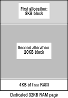
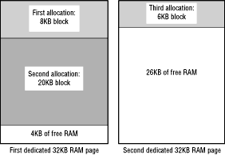

VRAM is premium memory because it can be used for everything, including special video operations. Because the SPORT bus allows for very quick block memory transfers, VRAM is useful for manipulating graphics and other complex data. VRAM can also be used for any other standard memory operations. DRAM isn't as versatile as VRAM because it can't be used for all video operations, but works fine for standard operations. DRAM can keep data for the cel engine (described in the Programming 3DO Graphics), which projects graphic images into VRAM.
Note: Although the current hardware implementation doesn't address more than 16 MB total, future implementations will go beyond that limit, so you must use full 32-bit addressing to ensure future compatibility.
When the kernel allocates memory to tasks, it keeps track of each page of memory it allocates. The size of a memory page is determined by the total amount of DRAM in the system divided by 64, the constant number of DRAM pages available, regardless of the amount of memory in the system. In a standard 3 MB system, each page of DRAM is 32 KB large (2 MB of DRAM divided by 64). In a system with 16 MB of DRAM, the page size is 256 KB.
VRAM page size is similar to DRAM page size. If available VRAM is 1 MB, VRAM page size is 16 KB. If available VRAM is 2 MB, VRAM page size is 32 KB.
Note: The size of memory pages and the number of memory pages is subject to change at any time, based on the current hardware design. Do not rely on these numbers within your titles.
To find out the page size of either type of memory, a task executes
GetPageSize().
Warning: VRAM is also divided into banks. Each bank of VRAM is 1 MB large. The SPORT bus can't transfer blocks of memory from one VRAM bank to another, so allocating VRAM within a single bank is important for anything involving SPORT transfers. When bank location is important, a task should always specify a bank, even though in a system with only 1 MB of VRAM, only one bank is available. The task can never be sure that it's not running in a 2 MB VRAM system with two banks of VRAM.
To find out in which bank of VRAM an address is located, a task executes
the GetBankBits() call.
AllocMem(), AllocMemFromMemLists(), AllocMemBlocks(), or malloc() to request that memory.In a memory request, the task specifies the type of RAM it requires:
The kernel dedicates memory to a task a page at a time, and then allocates memory to the task from within those dedicated pages. Consider an example: a 3 MB 3DO system has a 32- KB page size; a task starts that requires 8 KB of memory. The kernel dedicates a single 32- KB page to the task by putting a fence (discussed later in this chapter) around it. The kernel allocates the first 8 KB of the page to the task. The task then requests another 20 KB of memory; the kernel allocates the next 20 KB of the page to the task. 4 KB of free RAM remain in the page for future allocation, as shown in Figure 1.

Figure 1: Kernel page allocation.
When a task requests a block of memory that is larger than any contiguous stretch of free RAM left in a task's RAM pages, the kernel dedicates a new page (or pages) of RAM to the task. It joins the new pages with the memory already in the task's free list. It then allocates RAM from the new page(s). The kernel will dedicate as many pages of RAM to the task as necessary to supply contiguous RAM; if it can't find that much contiguous free RAM, it notifies the task that it failed to allocate the memory.
To see how that works, consider the last example where a task started with one page of dedicated RAM, used 8 KB of the page for startup, and then requested and received 20 KB more. The task now requests 6 KB more RAM, but there are only 4 KB free in its dedicated pages. The kernel dedicates another page of RAM to the task, a page that can't be guaranteed contiguous, to the first page of RAM. In this example, consider the new page not to be contiguous. The kernel then allocates the first 6 KB of the new page to the task. If it had tried to allocate the last 4 KB free in the first page along with the first 2 KB of the next page, the block of memory would have been noncontiguous when it crossed the page boundary, so the kernel allocates all of the memory block from the second page as shown in Figure 2.

Figure 2: Continuous allocation of memory block.
When a task writes (or tries to write) to RAM addresses beyond its allocated memory, it can have one of two effects:
FreeMem() and free().) If all the allocated blocks within a dedicated page of RAM are freed, the kernel knows that the page is free but keeps the page dedicated to the task for future allocation calls.
When a task wishes to release free RAM pages back to the kernel so the kernel can dedicate them to other tasks, the task issues a ScavengeMem() call. This call causes the kernel to reclaim free pages and to list them once again in the system free page pool.
Whenever a task quits or dies, all of its memory returns to the free RAM pool-unless it's a thread. When a thread dies, its memory remains the property of the parent task, because a thread shares the memory of its parent task.
ControlMem(), which can take three actions: